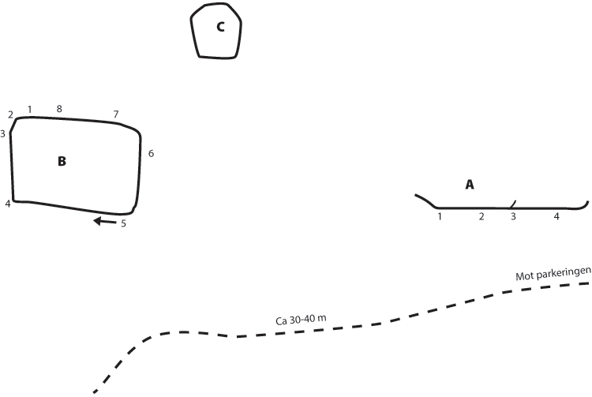

Brommablocken
Kategori:Stockholm
Kategori:Bouldering
Ett klassiskt problem, en del kvar att göra och några till fina problem med snabb access från Brommaplan. Allt är inte helt dokumenterat och en del problem kan behöva ett tag med stålborsten, men väl värt en kväll.
Vägbeskrivning
Bakom OK-macken vid brommaplan finns det en liten veckoparkering. Parkera där och gå in i skogen på andra sidan gångvägen. Följ stigen knappt 100m och första väggen dyker upp på höger sida.
<googlemap width=350 height=300 lat="59.342105" lon="17.939472" zoom="14" type="map" controls="small">
59.342105,17.939472,
Brommablocken
Skiss

Problem
(A) Väggen
- A:1
- Morhpholic
- 6B
- Jättelåg start.
- A:2
- Hale Bop Jr
- 6B+
- H kant + spricka eliminerad..
- A:3
- Crack For Fun
- 5B
- Sprickan upp, utsteg h om klykan.
- A:4
- SlappKlapp
- 5C
- Rakt upp.
(B) Block1
- B:1
- Ladderation
- 5A
- Rakt upp på goda grepp.
- B:2a
- Kennethklubben
- 6c+
- Start i undercling för vh och crimp för hh. Upp för areten.
- B:2c
- Mr Hanky The X-mas Poo
- 7B
- Lite osäkert hur den går.
- B:3
- Razor Poo
- 7A+
- Start i två sidepulls.
- B:4
- Grothens Escape
- 6A
- Sisstart på list, dra h, utsteg v.
- B:5
- Grothen Great Escape
- 6A
- Travers från hörnet, utsteg som ''Grothens Escape''.
- B:6
- Sva Svag
- 5A
- Rakt upp utan kanterna på blocket.
- B:7
- Kjell Kriminell
- 4B
- Uppvärmning.
- B:7b
- Kjell har blitt snäll
- 5A? S
- Följ kanten rakt upp utan att vika av
- B:8
- Crack of Love
- 5A
- Rakt upp i sprockan.
(C) Block2
Här går det något/några problem som ej är dokumenterade.
| width="250px" |
(D) Block3
En kort sträcka vidare förbi (C) blocket.
- D:1
- Kanyler och sil stör villafrid
- 6A
- Start på lägst greppen i gropen, massor med eliminering.
- D:2
- Blod och knark i skog och mark
- 6B
- Kylskåpsklättra snett upp åt höger, hyllan till vänster är eliminerad.
Copyright (C) Permission is granted to copy, distribute and/or modify this document under the terms of the GNU Free Documentation License, Version 1.3